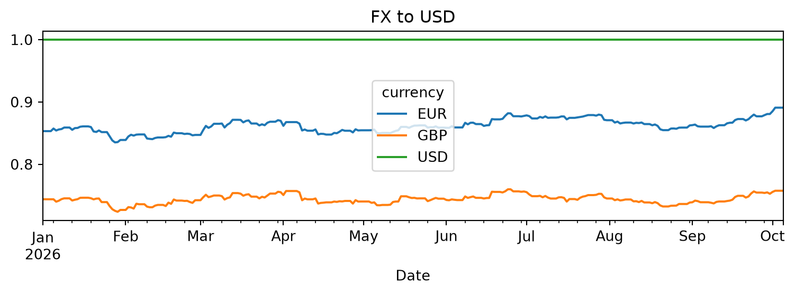

flowchart LR
API["<b>Frankfurter API</b><br/>daily EUR and GBP<br/>rates against USD"] --> PY
subgraph GHA["<b>GitHub Actions</b><br/>daily at 18:00 UTC"]
PY["<b>Python script</b><br/>reads what is stored,<br/>gets the missing dates,<br/>cleans and fills gaps"]
PY -->|every run| CSV["<b>CSV backup</b><br/>saved back to GitHub"]
PY -.->|on failure| SLACK["<b>Slack alert</b>"]
end
PY --> DB[("<b>Neon PostgreSQL</b><br/>table fx_rates")]
DB -->|SQL views| DS["<b>Google Data Studio</b><br/>live report"]
DB -.-> OTHER["<b>Other reports and</b><br/><b>Python projects</b>"]
classDef ext fill:#EFEFE8,stroke:#6FA1BF,stroke-width:1.5px,color:#1F3A4D
classDef job fill:#FFFFFF,stroke:#6FA1BF,stroke-width:1.5px,color:#1F3A4D
classDef store fill:#6FA1BF,stroke:#4A7F9E,stroke-width:1.5px,color:#FFFFFF
classDef alert fill:#FDF0E6,stroke:#C8692B,stroke-width:1.5px,color:#7A3A10
class API,DS,OTHER ext
class PY,CSV job
class DB store
class SLACK alert
style GHA fill:#E3EEF5,stroke:#6FA1BF,stroke-width:1.5px,color:#1F3A4D
linkStyle default stroke:#4A7F9E,stroke-width:1.5px
Daily FX Rates — Project Report
From a public FX rates source to a live report, with no manual steps
Overview
A daily feed of EUR and GBP rates against USD, stored and reported automatically. The loader in src/daily_fx_rates.py fetches rates from the Frankfurter API, saves them to a CSV backup and a Neon PostgreSQL table, and a Google Data Studio report reads the database to show GBP/USD, EUR/USD and GBP/EUR.
The result: one clean source of FX rates that my other reports and projects can use.
Why I built it
It started as a proof of concept: using Visual Studio Code with AI to build something real. It was also a project that could grow, giving my other reports the FX rates they need to convert data into a base currency such as USD.
Four questions shaped the work:
| # | Question | Answer |
|---|---|---|
| 1 | Where can I get FX rate data for free? | The Frankfurter API, a public source of daily rates at no cost. |
| 2 | How do I use an API to bring the data in? | One request from a Python script brings the rates in, ready to clean and store. |
| 3 | My Python and SQL are intermediate. How far can AI help me go? | AI wrote the code from my instructions and helped me solve each issue. I tested, debugged and decided. |
| 4 | How do I make the whole flow run by itself? | GitHub Actions runs the script every day and alerts me if it fails. Data Studio refreshes the report once a day. |
How the workflow runs
- Source: the Frankfurter API provides daily EUR and GBP rates against USD.
- Python script: runs inside GitHub Actions (
.github/workflows/daily_pipeline.yml) every day at 18:00 UTC, or when started by hand. It reads what is already stored, fetches the missing dates, cleans the data and fills the gaps. The database login is kept as a GitHub secret. - CSV backup: saved on every run and committed back to the repository.
- Database: rows are upserted into the
fx_ratestable in Neon PostgreSQL. - Report: Google Data Studio reads the table through SQL views and refreshes once a day. The Data Studio report is only the first consumer; other reports and Python projects can read the same table.
If any step fails, the run stops without writing partial results and a Slack message is sent.
Run modes
- Daily run (default): works only on the last 14 days. It loads that window from the database, gets the new rates, rechecks recently filled days, and upserts only those rows.
- Full check: reads the whole history from the database and the CSV, looks for missing business days since the start, and upserts every row. It runs automatically every Monday, on the first run (no table or no CSV yet), and when the stored data does not cover the daily window.
Decisions I made
| What I decided | Why |
|---|---|
| USD as the base currency | My other reports need to convert data into one base currency. With every rate stored against USD, the conversion is always the same. |
| A rate for every day, also weekends and holidays | I learned this in Power BI: a day with no rate cannot be converted. Empty days use the last known rate and are flagged filled; market rates are flagged raw. |
| A database, with a CSV file as backup | I started with only a CSV file. Then I moved to a database and found Neon, a free PostgreSQL option. The CSV stayed as the backup. |
| A full check once a week, not on every run | Checking the whole history every day was not needed. Daily runs look at the last 14 days. Every Monday the script checks everything. |
Testing and debugging
Getting the data was the easy part. Making it reliable was the real work. I log every issue in GitHub and then solve it.
| Issue | What happened | The fix |
|---|---|---|
| Days with no data | Some days were missing from the data completely. | Every Monday the script checks the whole history for missing days and loads them again. Daily runs check the last 14 days. |
| Duplicate data | The same date and currency appeared more than once. | A unique key on date and currency. Existing rows are updated, not added again. |
| Wrong values | Some days were filled before the real rate arrived, so the value was wrong. | Filled rates from the last 7 days are checked again on every run, and replaced when the real rate arrives. |
How I worked with AI
I started with GitHub Copilot in Visual Studio Code. Now I use Claude.
My part
- The idea, and clear instructions for every step
- Testing and debugging
- Some pieces myself with AI assistance, like the table settings and the unique key
- The Data Studio report
AI’s part
- Filling my gaps on the most technical side: the code and the connections
- Writing the code from my instructions
- Helping me solve each issue I found when testing
- Helping me polish the report
NoteWhy Data Studio and not Power BI
I can share a link and anyone can open the report. Power BI needs a licence and admin rights to share. I would have been quicker in Power BI, and the report would look nicer, but nobody outside could see it.
The final result
| 3 | FX rates in one live report | GBP/USD and EUR/USD come from the market. GBP/EUR is calculated from both. |
| 0 | manual steps from source to report | The job runs every day at 18:00 UTC and alerts me only if it fails. Data Studio refreshes the report once a day. |
| 2 | quality flags on every rate | raw for a market rate, filled for a rate carried forward on a weekend or holiday. |
Open the live report: KPI cards for each pair, GBP and EUR against USD rebased to 1 January, GBP/EUR with a 30-day average, and a period summary table.
Run it locally
pip install -r daily-fx-rates/requirements.txtRun the loader from the repository root (it needs DATABASE_URL in the root .env):
python daily-fx-rates/src/daily_fx_rates.pyTo force a full check at any time:
python daily-fx-rates/src/daily_fx_rates.py --fullor set the environment variable FX_FULL_CHECK=1.
Outputs
daily-fx-rates/data/fx_rates.csv(columns:date,currency,fx_to_usd,fx_quality_flag)- Neon PostgreSQL (table:
fx_rates, unique key ondateandcurrency)
Example
import pandas as pd
from pathlib import Path
from IPython.display import display
# Quarto runs from the project folder; a manual run may start at the repo root.
candidates = [Path('data/fx_rates.csv'), Path('daily-fx-rates/data/fx_rates.csv')]
p = next((c for c in candidates if c.exists()), candidates[0])
if p.exists():
display(pd.read_csv(p).tail())
else:
print('No fx_rates.csv present; creating a small sample for demonstration:')
sample = pd.DataFrame({
'date':['2026-08-06','2026-08-07','2026-08-08'],
'currency':['USD','EUR','GBP'],
'fx_to_usd':[1.0,0.91,0.78]
})
display(sample)| date | currency | fx_to_usd | fx_quality_flag | |
|---|---|---|---|---|
| 829 | 2026-10-01 | USD | 1.0 | raw |
| 830 | 2026-10-02 | USD | 1.0 | raw |
| 831 | 2026-10-03 | USD | 1.0 | raw |
| 832 | 2026-10-04 | USD | 1.0 | raw |
| 833 | 2026-10-05 | USD | 1.0 | raw |
# Visual: simple FX time series example (synthetic if CSV missing)
import matplotlib.pyplot as plt
if p.exists():
df = pd.read_csv(p, parse_dates=['date'])
# pivot to wide if long
df_wide = df.pivot(index='date', columns='currency', values='fx_to_usd')
else:
df_wide = pd.DataFrame({
'date':['2026-08-06','2026-08-07','2026-08-08'],
'USD':[1.0,1.0,1.0],
'EUR':[0.905,0.907,0.91],
'GBP':[0.775,0.78,0.78]
}).set_index('date')
df_wide.plot(figsize=(8,3))
plt.title('FX to USD' if p.exists() else 'FX to USD (sample)')
plt.xlabel('Date')
plt.tight_layout()
plt.show()
Notes
The loader performs an idempotent upsert, keeps fx_quality_flag values in both CSV and Neon, and rechecks recently filled rows so provisional data can be promoted to raw once the source publishes it.
The filled flag was introduced partway through the project. Rows loaded before mid-August 2026 carry raw, including weekends; rows from then on are flagged as described above.